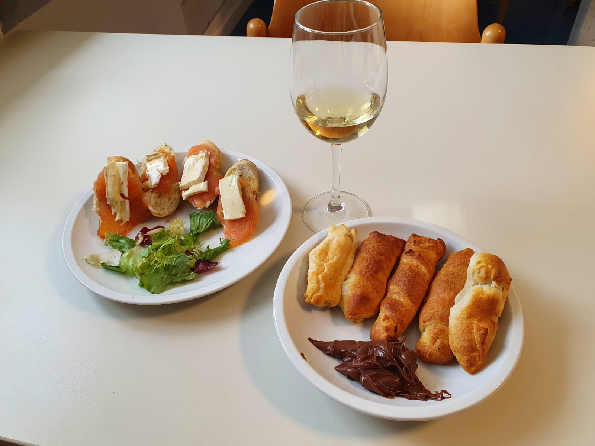

Since I know myself I have been always scattered in many things and directions. I know it is said that we shoud only be focused on a tack at a time, otherwise we`ll end up being good at nothing, but than how are we supposed to know what other things taste like? And what if you can be good in all possible directions?
In the past I had several cameras, even DSLR and mirrorless cameras. But nowadays I feel like I fit more with the technology that is offered through phones with vrey strong cameras like iPhone or Samsung. Right now I am feeding my passion with a Galaxy S10 wich I find unbelively good in photography for a phone.
Another thing that is pleasing my soul is the mountain. I love hiking more than I love pizza!
From my childhood I used to go with my father into the deep woods, far from civilisation, only to find the perfect location for fishing. Now fishing is something that I have deep in my DNA.
As anybody else I`ve achived the performance of having a bachelor and master studies, that will probably never be useful in this life. I`ve done this because I love the learning state of mind. It is a great thing to see yourself growing everyday. I enjoyed a lot reading some of the most popular titles that have inspired the hole world, and I am even writing sometimes.
That is another thing I have from my father: to love and respect bikes. I used to have a lot of them and I have lost already their number. Unfortunately, the last one, wich I invested a lot in it, was stollen from me. My father didn't lost this passion either. He has now nine bicycles, and his favorite is an electiric one. He said that he had to have one like this because of his age.


This is in fact the newest passion I have. The webpage you are reading right now has been created from this motivation. And the code you're seeing in the picture is exactely this page so far.
Last but not least is traveling. The amazing sensation that I have when I see a new place made me book another trip over and over again. I haven`t been in so many countries yet but there are some interesting places to see on my Instragram. Check it out!
Since I know myself I've been a very gourment person. My mother told me that the first thing I did when I came to this world was not to cry like a normal person would do, but to eat. I learned to cook fried eggs at the age 7. In the past years I was totally reckless when it came to eating, so I had to change somthing because I fel miserable, and as a result for almost one year now I am vegetarian (peascatarian). As you can see in the pics I also like to pay some atention to the plating.
Eventhough I used to eat a lot I didn't have any problem with getting weight. But after I was hif and used to work 9-10 hours a day sitting on a chair, some changes occured into my body without even realising. This is why I changed the way I ate and especially the amount of everyday physical activity. First I searched a lot about information because out there are also a lot of people that failed succesfully to loose weiht. So I had to do it right. After a tone of studying the problem, I realised that the secret is to count every single calorie that you eat to ensure you are in a caloric deficit. Eventough sport doesn't help you too much in this is very important do it and to stick to a progrm beacuse these two are going along only toghther.


Eventough I found satisfaction in the things that are called "big deal" in life, I realy belive that the greatness of it comes from the small and simple things. It comes form details. For me this things are: taking a shower in the morning with natural light, singing there, and even washing my teeth there. It is also pleasing me to watch the sunset with a glass of white wine, or if there is no sunset, than to hear the sound of the rain, or even better the thunder. I love snowboarding, love to drive (once I dorve 2000 km without sleeping), love metaldetecting, and so many other things...